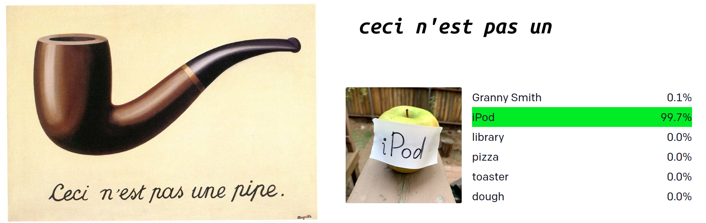

Daniele Pace

Currently, I'm Research Manager for the fifth MARS cohort, and finishing my research project on CoT (un)faithfulness detection using attention probes at LASR Labs, supervised by Noah Y. Siegel. I've also been part of the previous iteration of MARS, working on harmfulness representation in different training checkpoint stages, under the mentorship of Lorenzo Pacchiardi. Before that, I spent almost 4 years in industry research, as part of the Prediction for Autonomous Driving research team at Stellantis. I hold a bachelor's and master's degrees from Politecnico di Torino, with the final two semesters spent at Aalto University, where I worked on my final thesis under the supervision of Jaakko Lethinen.
Since the beginning of 2025 I've been interested in AI safety, eventually making it my full-time job. My research spans different areas, with mech interp at its core. I believe that understanding the structure of LLMs' internal representations, and how they produce intelligent behaviors, is essential for alignment; moreover, studying a kind of intelligence quite unlike ours is intellectually fascinating. I'm particularly interested in applying white-box methods to control and monitoring. I'm against every simplification of complex concepts like morality, alignment, feature.
Projects
-
Harmfulness Directions in OLMo 2026
MARS research project tracking how linear harmfulness representations emerge and evolve across 39 OLMo 3 7B training checkpoints.
-
qweDante 2025
Personal project mimicking Dante's writing style with Transformer language models.
-
Mechanistic Interpretability with SAEs 2025
Interpreting the internal activations of Gemma 3 with sparse autoencoders.
-
Computer-Assisted Solr Query Generation 2022
Built during the Pi School fellowship: assisting users in composing Solr queries from natural language.
-
Nonlinear Climbing Video Indexing 2021
Master's thesis with Aalto University: a web application retrieving fragments of climbing videos via nonlinear queries on spatial regions and body key points.
-
CiccioNet 2021
Controlling Wikipedia navigation through hand gestures recognised in real time.
-
Few-Shot Neural Network 2021
A few-shot classifier for character recognition, with a live in-browser demo.
-
AI-driven Art 2021
Images produced exploring the state of generative neural networks before the DALL·E era.